Guided bonefishing out of North and Middle Caicos, in a flats boat that runs in four inches of water.
5.0 on Google$950 a day for up to two anglers
Captain Manny Williams and his son Moose take up to two anglers a boat onto the flats 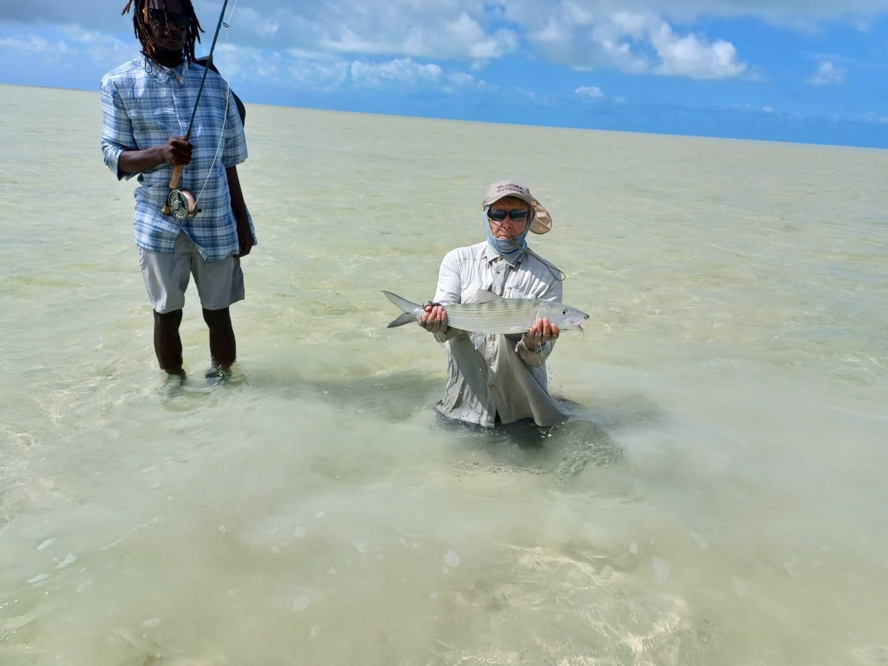 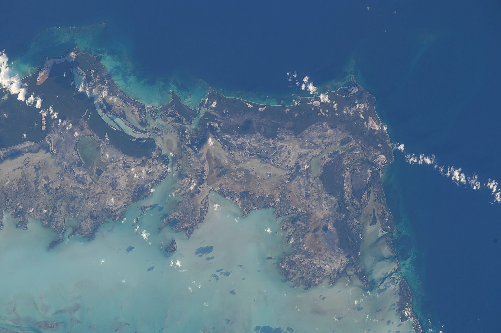 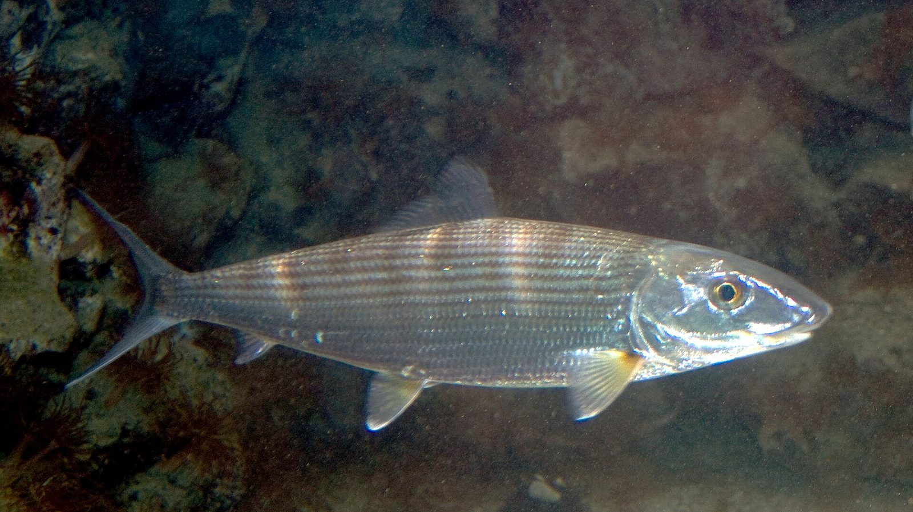
Thirty miles an hour in four inches of water
We run two Chiquita flats boats, built in Texas. The tunnel hull runs at 30 mph and more in just four inches of water, so we reach creeks and flats other skiffs can't, including the flats of uninhabited East Caicos, which until now only an airboat could get to.
“The boat has no sides, it’s just a gloriously flat casting platform.”
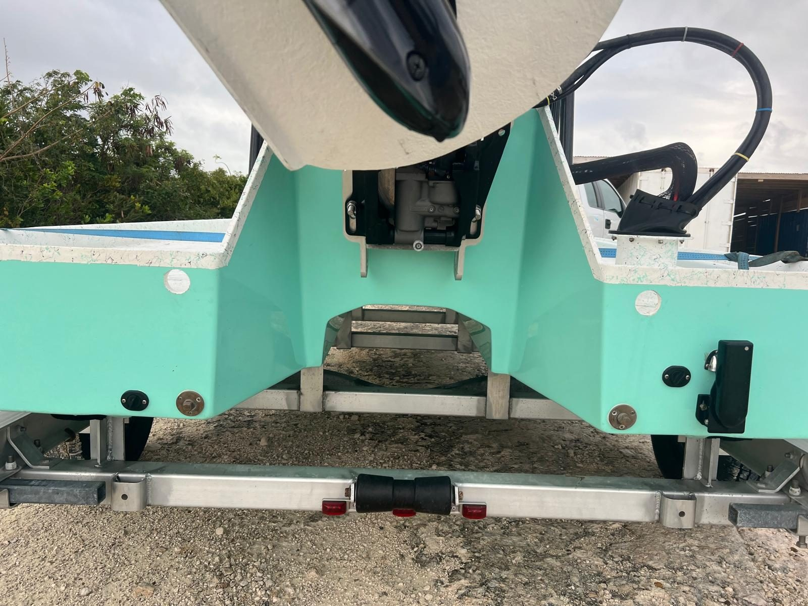
Ten o’clock,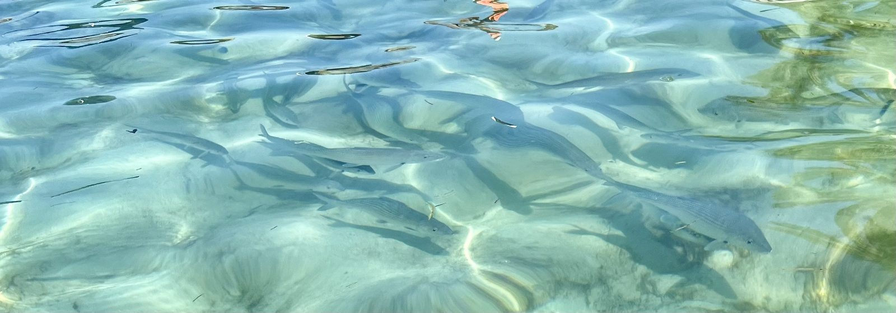
forty feet.
From the poling platform, your guide calls every fish by the clock: twelve is the bow, three is straight off your right hand. Hear the call, find the shadow, then tap where your fly should land, a few feet in front of his nose.
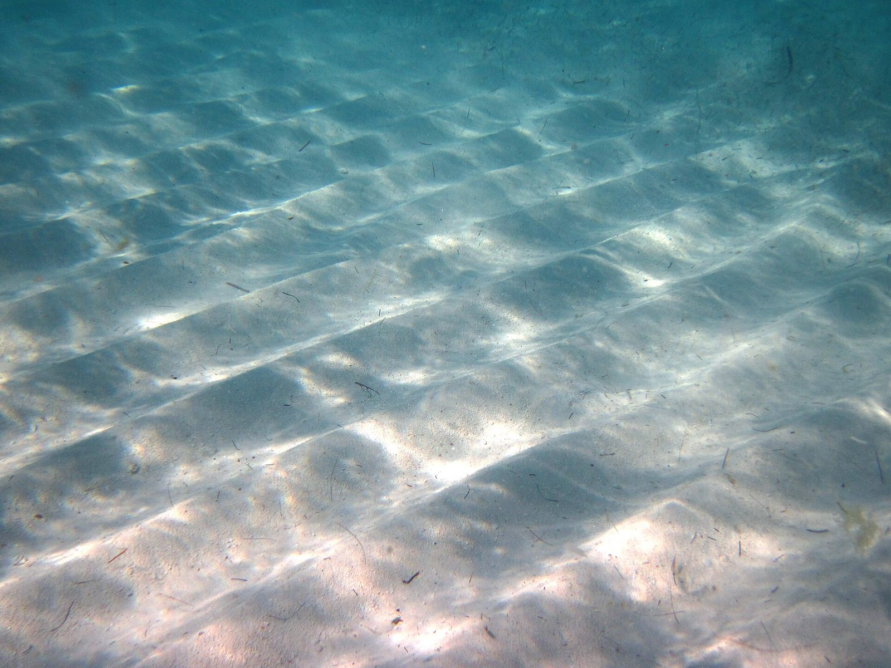
Bonefish on the flat
Fish to hand: 0 of 3
Three fish are coming. You get one cast at each.
Lead the fish: land the fly two to eight feet in front of his nose, on his line. On his head spooks him; behind him, he never sees it.
- Landing Road, Kew, North Caicos
- Two Chiquita flats boats
- Catch and release, always
Your guides
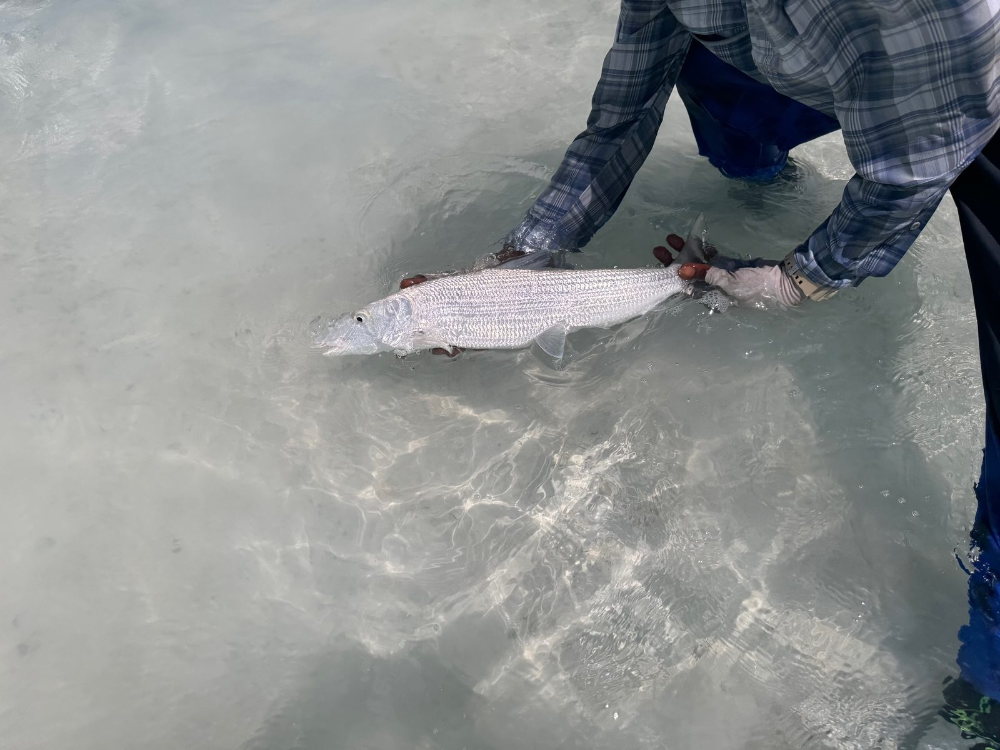
Captain Manny Williams was a gill netter before he became a bonefish guide. Now every bonefish goes back. His son Moose Williams has been a professional bonefishing guide for more than fifteen years.Thomas Nowell found Manny “very knowledgeable about the tides and local waters.” Matthew Wright put it this way: “Like the best guides Moose thinks like a fish but he also listens to his clients.”
The log
The log:
a 10 lb bonefish for Craig, 6 January 2026 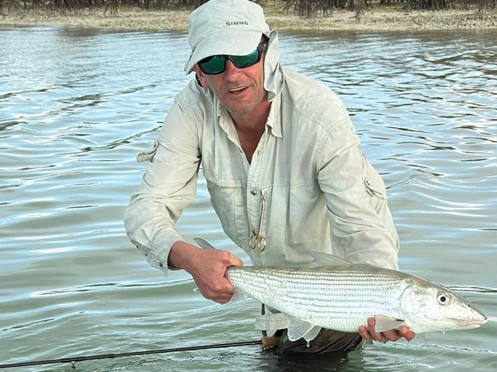 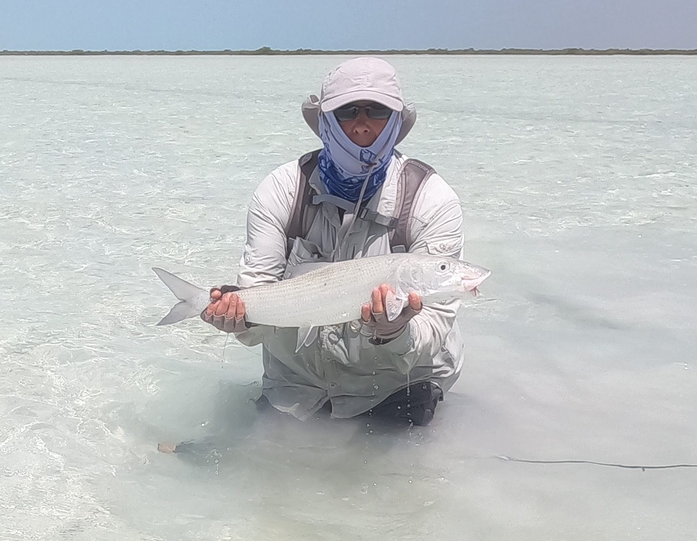 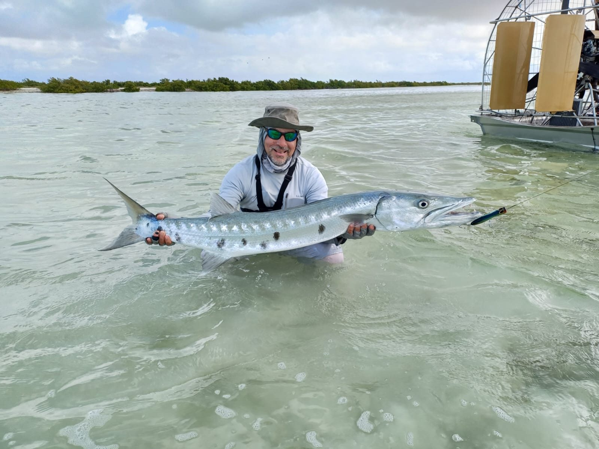 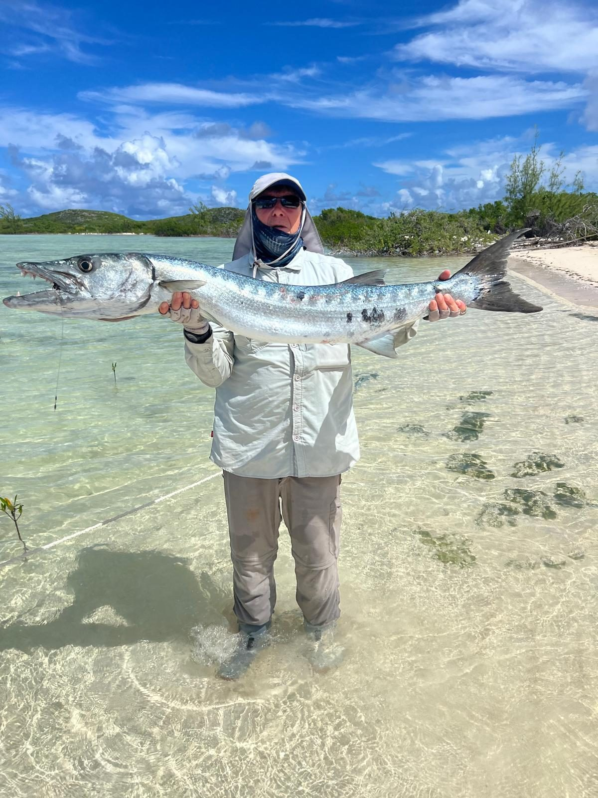 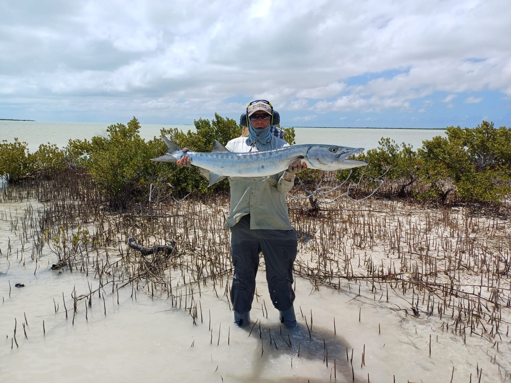 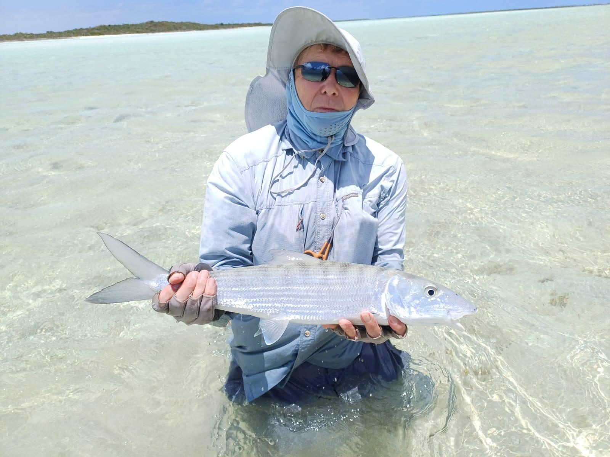 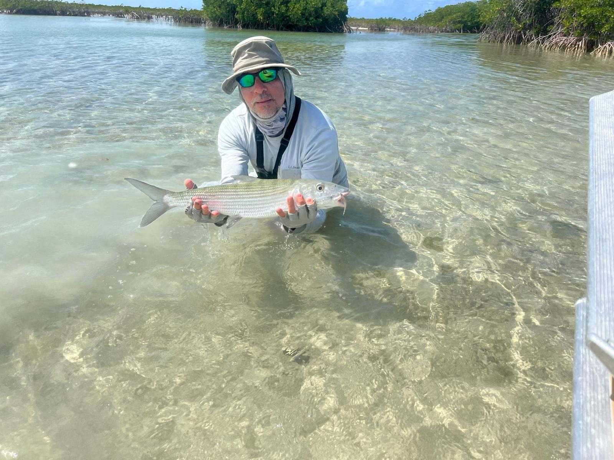 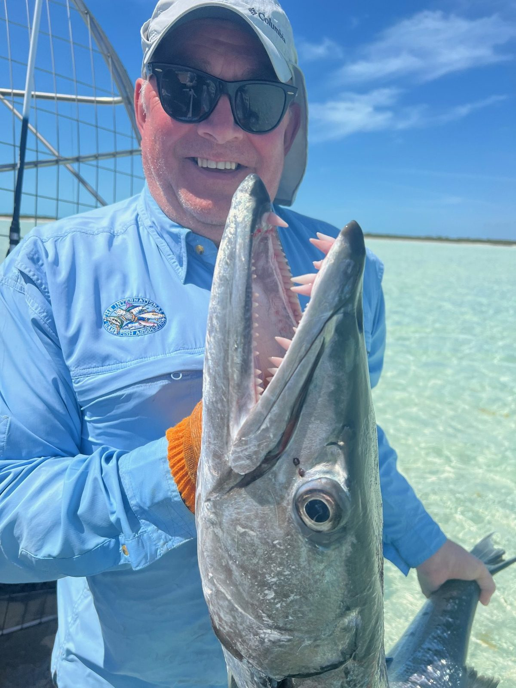


Every bonefish went back. Photos from our boats, 2023 to 2026.
What anglers say
“We saw hundreds of bonefish and caught around 10–12 in just a few hours.”
Mike Bruce“My son and I had a great day on the flats with Moose. The best guide I have had in the Caribbean, very enjoyable experience!”
Abel LaBelle“Amazing skiff, can run on 6 inches of water.”
Jan Forszpaniak, holder of over 130 IGFA world records“He is a really knowledgeable captain.”
Steve Wood, on Manny
A full day, two rods $950
8am to 4pm out of Bellefield Landing on North Caicos or Lorimer’s at the far end of Middle Caicos, for up to two anglers, plus 12% Turks and Caicos tax. Bottled water is on board; bring your own lunch and soft drinks.
Plan the day.
Pick a date and we’ll lay out the ferry, the dock and the cost. Then send it to us and we’ll confirm your day.
Before you come
How do we get here from Provo?
Take the 7:30am Caribbean Cruisin ferry from Leeward; it reaches Bellefield Landing on North Caicos at 8am, and your captain meets you there with the boat moored alongside. Most days you go back on the 4:30pm ferry, or the 5:00 or 5:30pm from April to August. The fare is $65 round trip and you don’t need a reservation. On Sundays and holidays the first ferry leaves at 8:00am.
Do we need a fishing licence?
Yes. Every angler aged 16 or over needs a Turks and Caicos fishing licence.
What should we bring?
Two or three fly rods: nine to ten foot, seven to nine weight for bonefish, and nine to ten weight for barracuda, with floating saltwater taper lines. Spinning tackle is optional: seven to ten foot, 4 to 10 lb test, quarter-ounce bucktail and wiggle jigs. Flies that work here: Crazy Charlies, Merkin crabs, Caicos specials, shrimp, bonefish specials, epoxy shrimp and puff flies. The bottom is sand, coral and grass. Bring your lunch and soft drinks; the water is on us.
How do we book?
Email info@bonefishmiddlecaicos.com or call +1 649 231 2424. A 50% deposit confirms your day. We need 48 hours’ notice of any change or cancellation; inside 48 hours we can’t return the deposit.
Should we fish more than one day?
We recommend two or three. Stay on North or Middle Caicos for the trip and you skip the ferry each morning; ask us and we’ll tell you where to stay.
What else bites?
Barracuda, on the fly or on topwater plugs, and the big ones go past 30 lb. We have also taken a family out to see the Middle Caicos Blue Hole with some bottom fishing on the way: barracuda, a grouper, a jack and plenty of snapper.